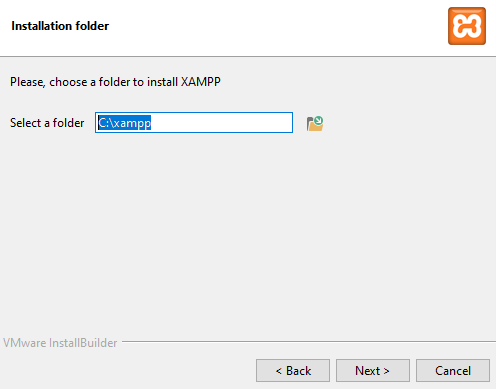

Instalando o XAMPP
Procurar sites confiáveis ou original
O site original original: (https://www.apachefriends.org/pt_br/index.html)
clique aqui
- Aqui esta o passo a passo;

- Depois escolhe o sisma operacional que vai utilizar, Windows:

- Depois de fazer downloads, clicar em next.

- Nesta fase não desmarca nada, clica em next.

- Nesta fase não troca o nome, pois fica facil encontrar.

- Aqui você faz o teste, para verificar se o apache esta funcionando corretamente, clicando em star para
iniciar.
- Verifique se o Apache e MySQL estão funcionando:

Trabalhando com PHP no XAMPP usando o PowerShell
- Faça o download do XAMPP: Visite o site oficial e baixe a versão compatível com o seu sistema operacional.

- Crie uma pasta para extrair os arquivos: Após o download, crie uma nova pasta e extraia os arquivos do XAMPP nela.

- Abra o PowerShell: No menu Iniciar, procure por "PowerShell" e abra o aplicativo.


- Crie um arquivo PHP: No PowerShell, navegue até o diretório onde o XAMPP foi extraído e execute o comando para criar um arquivo PHP.
- Edite o arquivo PHP: Abra o arquivo PHP com um editor de texto e adicione seu código PHP.

- Crie um arquivo HTML: Use o Bloco de Notas para criar um arquivo HTML com instruções simples para uma pessoa leiga.